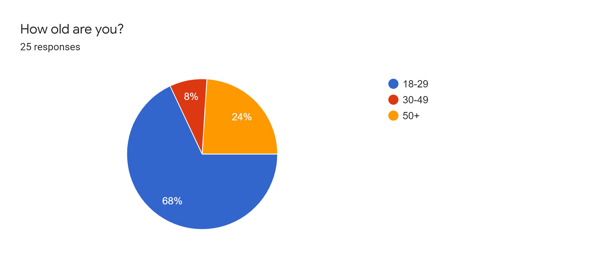
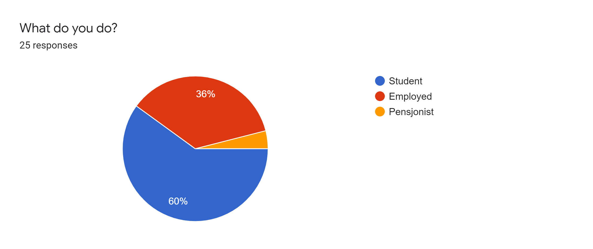
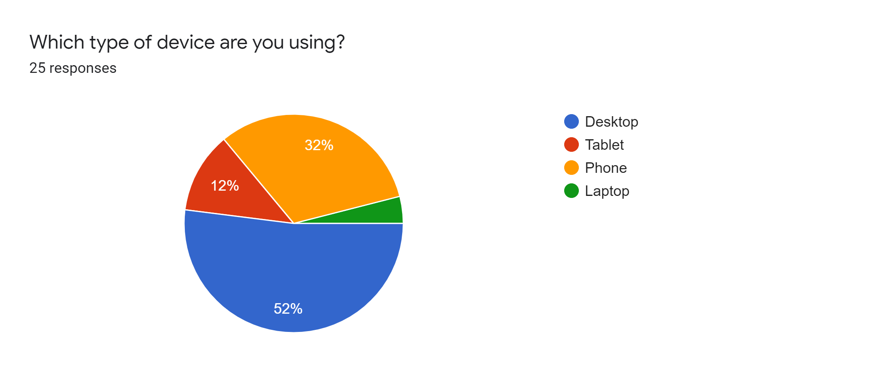

Our Client
Our Client
- Client Name: Hassel Software AS
- Contact person: Vigbjørn Hassel Vaage
- Position in company: CEO
Hassel Software is a Norwegian tech startup created by a company with more than a hundred years of experience selling and distributing cars. Since 2015 they have developed software to digitize traditional dealerships and dealership networks.
Link to our website: click here
Link to our GitHub Repository: click here
 Testing Document
Testing Document
The goal for testing our website properly is to find potential design flaws and otherwise improving
aspects of our site that might be confusing or hard to use. To proceed we created a Google Form
that asked testers to enter our website, browse around to get a feel of it, and in the end answer
some questions. The questions will ask the user about him or herself, the content, the layout and
the general feeling of the website. The form is flexible and can work in any testing scenario as it
includes both instructions on testing, a questionnaire, and automatically submits the data to us
online.
We chose to focus on two methods to test our site:
- Using the form as a questionnaire in a one-to-one interview while quietly observing
the tester navigating our site, and if needed adding follow up questions to go more in depth.
- Sent as a link to remote testers.
Link to our Google Form: s.ntnu.no/webtek20test
Link to our test results: results
Testing Audience
As the main audience of the website itself are potential customers of the product, it might be
natural
to reach out to similar users in the testing phase. It is however hard as student web developers to
find and reach out to national car importers and car distributors, so we will instead focus on the
general
usability of the site for the average user browsing the web sorted by age and occupation. We assume
that users within the target industry and the average web user are similar and will be
sufficient for testing usability and feeling of the website. The website is designed to work for
any web user that has an interest in the product or company and testing will provide data on whether
or not the design is working as intended and the user is provided with the information we want.
The testers are a mix of:
- Students
- Our client
- Other average web users
Results
The test results show that we are partly successful finding the ideal testing audience. We had hoped to reach out to a higher percentage of average web users instead of students, as the majority of student testers are IT students and could be considered a power-user on the web rather than the average user. The testing audience as a whole however is still sufficient to identify potential flaws in our design as well as issues that we would resolve in a future version of the page.  
Testing Platforms
The website is designed to be responsive on all screen sizes. In the questionnaire we collected data about what device was used while testing.
Results
56% of testers used a desktop or laptop to test our site (full resolution), while the rest used tablet or mobile resolutions. As per our design all features are compatible on all popular screen resolutions, so all features are a product for testing on any platform. As the site is designed to fullful the project requirement of compatibility for Chromium browsers, several testers using other browsers experienced similar bugs. Unfortunately the testing did not include which browsers were used, which is a major learning point for potential future tests. 
Feedback Summary
Our Response
Self-reflection
When we started this project, we had different backgrounds and experiences. Nobody had worked with
other people in git. Some of us had produced websites at high school. Firstly, we experienced a true
challenge to get the whole team on the same page, generating a common understanding of what we were
to deliver to our client. Questions like what we are building, what’s our client’s goal, what’s the
purpose of the website, were central. The first few group meetings were all about finding a common
ground and understanding of our assignment, our goal, and how to achieve it, while maintaining the
potential for all members to learn and develop themselves as web developers.
Once we started working on P2, we had managed to create a good common ground, and we were
experimenting with git, git branches and we had our first pull requests and merge conflicts. We were
starting to feel the power of Git and how we could collaborate on a bigger project efficiently with
git bash together with GitHub.
Entering P3, our efforts of building a good git understanding proved worthy. We started to have
great respect for the power in git and suddenly couldn’t imagine producing code without it. The
project has been a great learning experience and journey for us all. Working together as a group is
not easy, there have been different levels of ownership and some have neglected their
responsibility, leaving others to do additional work.
All in all, this has been a learning experience building a solid foundation for the rest of our
degree here at NTNU and not just web development. We can see how this can scale in the future and
how we later may one day be members of professional coding teams. We much appreciated this
opportunity and the course have been a pleasure to attend.